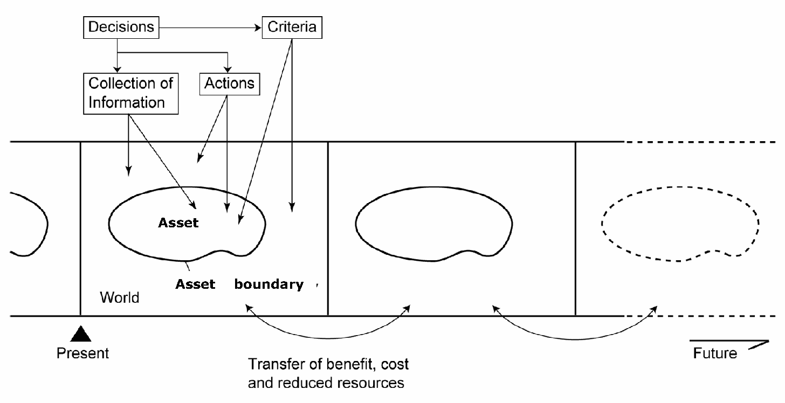
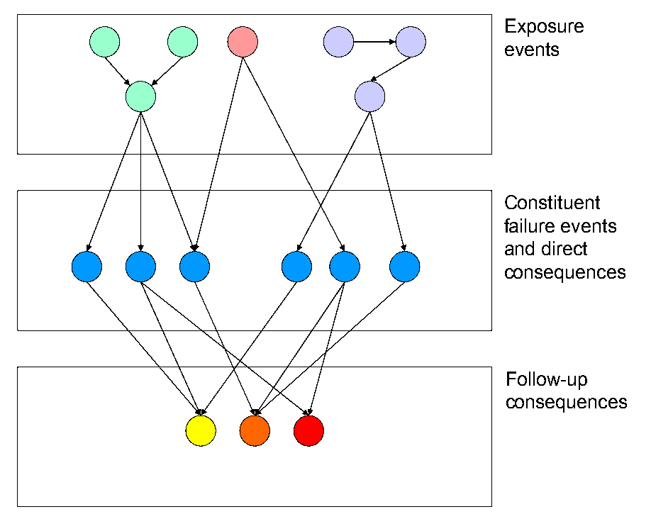
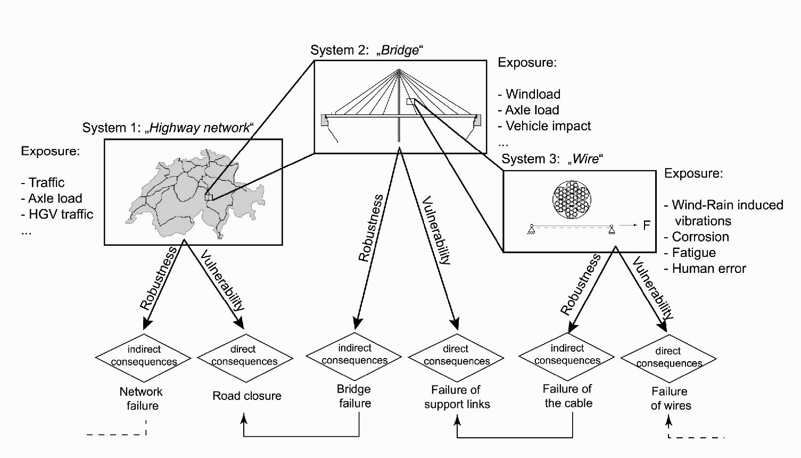
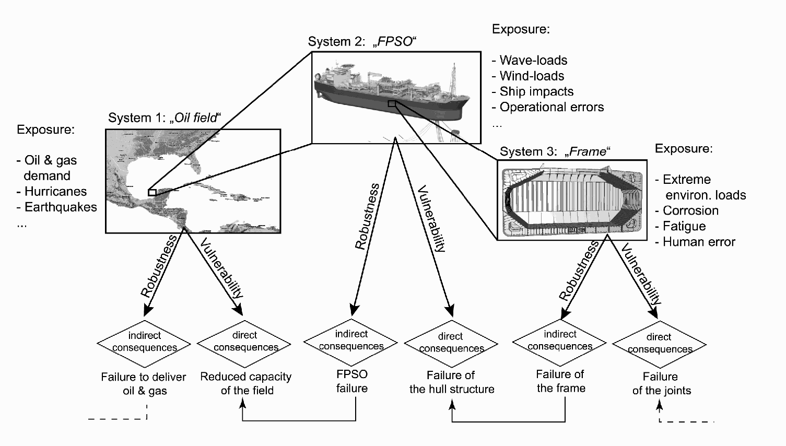
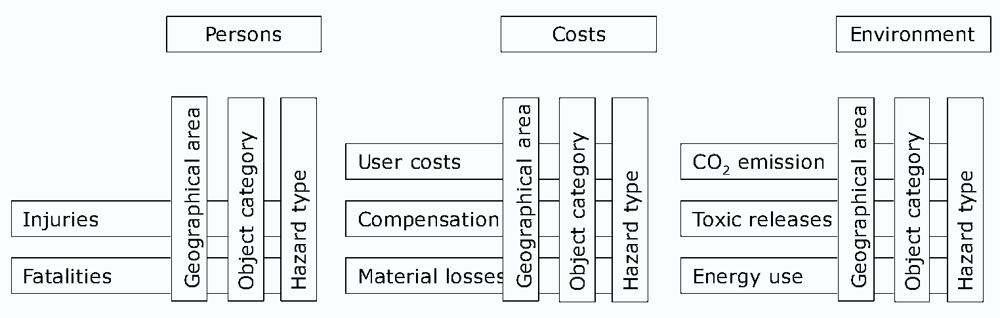
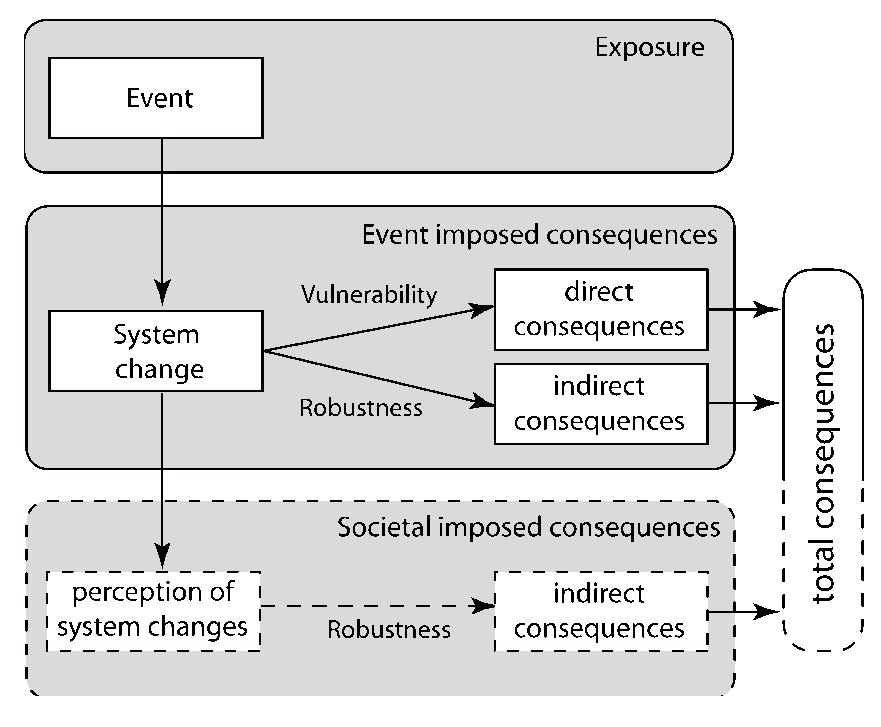

3 System modeling#
Decision making can be seen as being equivalent to participate in a game where the decisions (moves) by the decision maker aim to optimize the utility in correspondence with the preferences the decision maker is representing. The main opponent in the game is nature, but also the individuals of society which by lack of knowledge, by accident or by malevolence may impose damage to the society must be accounted for. Figure 3 illustrates risk based decision making in a societal context from an intergenerational perspective. Within each generation, decisions have to be made, which will not only affect the concerned generation but all subsequent generations. It should be emphasized that the definition of the system in principle must include a full inventory of all potentially occurring consequences as well as all possible scenarios of events which could lead to the consequences.
At an intra generational level, the constituents of the game consist of the knowledge about the system and the surrounding world, the available decision alternatives and criteria (preferences) for assessing the utility associated with the different decision alternatives.

Knowing the rules (constituents) of the game, i.e. the assets, the possible consequences and how all these factors interrelate with the world outside the assets and into the future is essential for winning the game. For this reason a very significant part of risk based decision making in practice is concerned about system identification/definition as well as the identification of acceptance criteria, possible consequences and their probabilities of occurrence. Playing the game is done by “buying” physical changes in the system or “buying” knowledge about the system such that the outcome of the game may be optimized.
It is instructive to consider a system to be comprised by an ensemble of interrelated constituents; buildings, structures, components, lifelines, technical equipment, procedural processes, humans and the environment. In a broad sense the constituents can also be termed assets. The individual constituents and the logical interrelation between the constituents provide the characteristics of the system. A system may be defined through any characteristic of the ensemble of the constituents which are not already a characteristic of the individual constituents; this definition follows the perspective that “more is different”. Here, as we are dealing with systems associated with uncertainty and our main concern is risk, we will focus on the risk associated with the system performance.
In describing a system, a spatial and temporal representation of all constituents is required; this includes a description of the interrelations between all relevant exposures (hazards), the assets and the possible consequences. Exposures to physical objects like structures and lifelines may e.g. comprise loads caused by operation and events of nature. Exposures might also be related to events originating from procedural mishaps and generally comprise any unforeseen or unintended behavior of humans; this in turn may occur due to natural and organizationally given boundary conditions as well as malevolence. Direct consequences are related to damages on the individual constituents of the system, whereas indirect consequences are understood as any consequences beyond the direct consequences, i.e. associated with loss of system functionalities.
The appropriate level of detail or scale depends on the physical or procedural characteristics or any other logical entity of the considered problem, as well as the spatial and temporal characteristics of consequences. The important issue when a system model is developed is that it facilitates a risk assessment and risk ranking of decision alternatives which is consistent with available knowledge about the system and which facilitates that risks may be updated according to knowledge which may be available at future times. Furthermore, the system representation should incorporate options for responsive decision making in the future in dependence of knowledge available then.
It is furthermore important that the chosen level of detail is sufficient to facilitate a logical description of events and scenarios of events related to the constituents of the system which individually and/or in combination may lead to consequences. In addition to this, the representation of the system should accommodate, to the extent possible, for collecting information about the constituents. This facilitates that the performance of the system may be updated through knowledge about the state of the individual constituents of the system.
3.1 Knowledge and uncertainty#
Knowledge about the considered decision context is a main success factor for optimal decision making. In real world decision making lack of knowledge (or uncertainty) characterizes the normal situation and it is thus necessary to be able to represent and deal with this uncertainty in a consistent manner.
In the context of societal decision making with time horizons reaching well beyond individual projects or the duration of individual decision makers, the uncertainty related to system assumptions are of tremendous importance. Rather different assumptions can be postulated in regard to future climatic changes, economic developments, long term effects of pollution etc. It is obvious that if the wrong assumptions are made, then also the wrong decisions will be reached.
To the degree that uncertainties and their dependencies might influence the assessed risks it is thus important that they are accounted for in the calculation of risks. The present section provides guidelines, i.e. guiding principles as well as recommended application of these, on how to represent uncertainties in the assessment of risks.
The consistent treatment of knowledge and the associated uncertainty play a key role not least when managing risks for portfolios of assets; the consistent representation of knowledge and uncertainty assures that results of risk estimates obtained for different assets and for individual hazards can be integrated and aggregated. This implies that risk assessment for e.g. objects or networks subject to several different types of hazards such as e.g. traffic accidents as well as rock-fall can be performed by integrating the different model components from the corresponding application areas with due consideration to the uncertainties which influence these models. In the same way risks assessed for two different objects may also be aggregated.
If different system representations could be valid, due to lack of knowledge, it is essential to take this into account in the process of risk based decision making. This is e.g. the case when considering possible future climatic changes, when modeling extreme earthquake excitation and when assessing consequences for hazard events which go beyond historically recorded experience.
There exist a large number of propositions for the characterization of different types of uncertainties. It has become standard to differentiate between uncertainties due to inherent natural variability, model uncertainties and statistical uncertainties. Whereas the first mentioned type of uncertainty is often denoted aleatory (or Type 1) uncertainty, the two latter are referred to as epistemic (or Type 2) uncertainties. However this differentiation is introduced for the purpose of setting focus on how uncertainty may be reduced rather than calling for a differentiated treatment in the decision analysis. In reality the differentiation into aleatory uncertainties and epistemic uncertainties is subject to a defined model of the considered system.
For the decision analysis, the differentiation is irrelevant; a formal decision analysis necessitates that all uncertainties are considered and treated in the same manner. The relative contribution of the two components of uncertainty depends on the spatial and temporal scale applied in the model.
The risk assessment should include a description of all relevant assumptions made in connection with the system identification, as well as the modeling of consequences and frequencies. The level and type of knowledge available to support the assumptions, as well as the modeling of consequences and frequencies, should be explicitly stated.
In some cases information is available in terms of observations of e.g. accidents or events of natural hazards. In case such information is available it should always be attempted to utilize this for the modeling of frequencies of the events. The same applies for consequences for which experience from previous events might be utilized. Such models should account for the statistical uncertainty representing the effect of limited data as well as possible model uncertainties originating from the use of the models for other cases than the case from which they were obtained.
In many cases parameters which are known to have influence on the risks are simply not known in a given situation. This may e.g. be the case if the aggregated risk for all tunnels is assessed without accounting for detailed information about the geometry of the tunnels. In such cases it is important to account for the lack of knowledge, by representing the unknown tunnel geometry parameters as uncertain parameters in the formulation of the risk analysis models.
Commonly the assessment of frequencies and consequences depend on models based on experience and engineering understanding. In such cases the uncertainty associated with the models should be described preferably in quantitative terms.
In general the documentation of the knowledge should address all relevant uncertainties due to inherent natural variability as well as model uncertainties and statistical uncertainties. Independent on whether such uncertainties are neglected, assessed qualitatively or quantitatively, as a general rule; their treatment and modeling should always be stated clearly. Neglecting uncertainties in the risk assessment should always be justified by sensitivity studies.
The quantitative representation of uncertainties in risk assessment, should take basis in the probability theory. The Bayesian statistics provides a basis for the consistent representation of uncertainties independent of their source and readily facilitates the joint consideration of purely subjectively assessed uncertainties, analytically assessed uncertainties and evidence as obtained through observations.
All uncertainties should be represented in accordance with available data and/or unbiased estimated, based on experience and expertise.
It is underlined that possible extreme consequences may be subject to considerable uncertainty, due to the fact that only very little information and experience is available on these. Indirect consequences due to the perception of adverse events by the public are poorly understood and the associated large uncertainty should be accounted for accordingly in the risk assessment.
Generally, uncertainties are best represented through random variables with specified probability density functions and corresponding parameters. If two or more uncertainties can be assumed to be statistically or otherwise dependent, this dependency should be accounted for in the probabilistic modeling. Statistical dependency may be appropriately represented through correlation. Functional dependency or common cause dependency is appropriately represented through hierarchical probabilistic models. Only if the prevailing dependencies are correctly accounted for when assessing the risks for different objects and systems will it be possible to aggregate the risks correctly.
As an example, consider the risks due to rock-fall events along a road. There may be several objects i.e. tunnels, bridges and galleries along the road, each separated by road way segments. The aggregated risk for the considered road would conveniently be assessed through the sum of the risks for all objects. However, in this case the risks for each of the objects depend on common factors including the average traffic volume per hour (over the day), the time of the event of rock-fall (day/night), the type of traffic and the consequences due to disruption, each of which might be associated with uncertainty. When assessing the total risk aggregated over all objects on the considered roadway, it is thus necessary to aggregate the risks conditional on the common uncertain parameters first and thereafter to integrate the aggregated risks over the uncertain common parameters. In principle this operation is quite simple, but in essence very important, as it will yield a significant effect on the aggregated risks. If risks are aggregated without consideration of common uncertain factors, the resulting total risk may be grossly at error.
3.2 System representation#
The risk assessment of a given system is facilitated by considering the generic representation illustrated in Figure 4. A main issues in the representation of systems is to facilitate and enhance the identification of scenarios of event which, starting from exposures such as loads and attacks by chemical substances, induce damages and failures and further onto consequences.

The exposure to the system is represented as different exposure events acting on the constituents of the system. The constituents of the system can be considered as the systems first defense in regard to the exposures. The damages of the system caused by failures of the constituents are considered to be associated with direct consequences. Direct consequences may comprise different attributes of the system such as monetary losses, loss of lives, damages to qualities of the environment or just changed characteristics of the constituents.
Direct consequences, are thus defined as all marginal (not considering loss of system functionality) consequences associated with damages or failures of the constituents of the system. Based on the combination of events of constituent failures, and the corresponding consequences indirect consequences may occur.
Indirect consequences could be caused by e.g. the sum of monetary losses associated with the constituent failures as well as the loss of functionality of the system caused by the effect of one or more constituent failures. Indirect consequences, may thus be defined as any consequences associated with the loss of the functionalities of the system and by any specific characteristic of the joint state to the constituents and the direct consequences themselves. The indirect consequences in systems risk assessment play a major role, and the modeling of these should be given great emphasis. It should be noted that any constituent in a system can be modeled as a system itself. A system could be a road network with constituents being e.g. bridges, see Figure 5, or an offshore oil and gas field with constituents being Floating Production, Storage and Offloading facilities (FPSO’s), see Figure 6. The bridges and FPSO’s in turn could also be systems with constituents structural members. Depending on the level of detail in the risk assessment, i.e. the system definition, the exposure, constituents and consequences would be different.


The vulnerability is related to the risk associated with the direct consequences and the lack of robustness is related to the degree the total risk are increased beyond the direct consequences.
Indeed the system representation outlined in the above is only meaningful subject to a definition of what is considered to be exposures, constituents, direct and indirect consequences. However, in practical applications, the definition of these is generally given by the decision problem itself. If we want to determine the optimal allocation of the reliability of bridges in a road network in regard to e.g. earthquake events, the exposures would be the potential earthquake loads, the constituents would be the individual bridges, the direct consequences would be any consequence associated with the failure of any individual bridge in isolation and the indirect consequences would be loss of network functionalities plus consequences due to possible budget overruns caused by loss of individual bridges. Considering the design of a structure, the exposures would be any operational or environmental loads acting on the structures, including possible aggressive chemical environmental effects. The constituents would include the structural components, joints as well as passive and active protective and monitoring systems, which serve to provide the structure with a sufficient safety. Direct consequences would be material damages, loss of lives and damages to qualities of the environment caused by the damage or failure of any individual constituent. Indirect consequences would comprise the monetary consequences of the loss of the functionality provided by the structure, as well as additional material losses imposed on surrounding assets, including buildings, lifeline systems, environment and humans.
3.3 Exposures and hazards#
The hazards or exposures acting on the constituents of a system are defined as all possible endogenous and exogenous effects with the potential to cause consequences. A probabilistic characterization of the exposure to a system requires a joint probabilistic model for all relevant effects relative to time and space.
The characteristics of exposures are very different, depending on the individual exposure types. Exposures such as technical failures, accidents, explosions, rock-fall, and landslides are generally very suddenly occurring events. Floods and fire storms are generally more slowly evolving, while climatic changes and e.g. droughts are much slower. Exposures like human errors and malevolence, in turn, have their own patterns over time and space. In a risk management context, the characterization of exposures must take these differences into account in order to facilitate a realistic assessment of the possible consequences as well as to allow for the identification of possible relevant measures of risk prevention and loss reduction.
For suddenly occurring events, usually the probability of the event itself is needed; e.g. the probability that a flood will occur or the probability of an earthquake. Part of the safety against such events is carried by the probability that they will not occur at all. However, more characteristics or indicators are needed to facilitate the modeling of the possible consequences of the event. Considering earthquakes, typically applied indicators are the Peak Ground Acceleration and the earthquake magnitude. Considering explosion events, e.g. the exceedance probability of the pressure at a given location would be of interest. These characteristics or indicators are useful, because knowledge about them provide basis for assessing the potential damages caused by the exposures, such as e.g. liquefaction of soil and damages to buildings caused by the dynamic excitation from the earthquake.
It is important to note that in many risk assessments the joint representation of several exposures is required. This is e.g. the case when considering loads acting on structures where joint occurrences of live loads, dead loads and environmental loads together with chloride induced deterioration can constitute an important scenario for the assessment of the risks for a road way bridge.
3.4 Consequences#
The consequences which potentially may be caused by different hazards are manifold and generally depend strongly on the specific characteristics of the hazard as well as the location where it occurs and the assets which are exposed. As a general rule, consequences should be assessed in regard to loss of lives and injuries, damages to the qualities of the environment and economic losses. Considering e.g. the assessment of the risks on a roadway network, the consequences illustrated in Figure 7 might be relevant.

The risk assessment is greatly facilitated by considering the generic representation of the development of consequences shown in Figure 4. However, in the assessment of consequences, it is useful to consider a further differentiation as illustrated in Figure 8. From Figure 8 is seen that two types of indirect consequences are differentiated, namely the indirect consequences due to physical system changes and the indirect consequences caused by the societal or public perception of these. The reason for this differentiation is to indicate how risk management may efficiently be supported by risk communication. The better and more targeted risk communication is undertaken before, during and after events of natural hazards, the smaller the consequences caused by perception will be. Often traditional risk assessments focus on the assessment of direct consequences and do not attempt to model the indirect consequences by rigorous modeling. Instead, indirect consequences are included by somehow amplifying the direct consequences by means of a risk aversion function, the characteristics of which generally are assessed subjectively.
Indeed it is a little puzzling that the often more important contribution to consequences is commonly modeled by means of the simplest possible approximation. The approach suggested here, where consequences are differentiated into different components is meant to circumvent excessively simplistic modeling, bringing the indirect consequences into focus and indicating the different ways they might be controlled.
A range of different terms to characterize the effect of hazards are applied across different disciplines. Among these, vulnerability, resilience, robustness and adaptive capacity are used most frequently. Vulnerability is commonly related to risk over time in terms of expected potential future losses considering all possible events which may lead to such. Robustness is often applied to characterize the response of a system to given changes in the system state variables. Different interpretations of robustness are available in the different disciplines. In structural engineering, a robust structural system is understood as a structure which will not loose functionality at a rate or extent disproportional to the cause of the change in the state variables. The term resilience in accordance with its Latin origin may be associated with a systems elastic ability to return to its original state after some perturbation. Usually, in risk assessment resilience, is applied in a qualitative manner as a descriptor of a considered system’s or society’s ability to rehabilitate its main functions, e.g. such as e.g. livelihood, however, it must be appreciated that the considered system may indeed be very dissipative; changes in its state variables may be associated with significant losses. The same or similar meanings are typically associated with the term adaptive capacity which serves as a measure of the ability of a given system to adapt to new situations and thereby maintain and or even improve functionality. In the context of risk assessment the meaning of robustness is generally very close to the meaning of resilience and adaptive capacity.

In view of the different and somewhat imprecise use of different terms for the characterization of systems in regard to how exposures may result in consequences of various degrees of severity, the terms vulnerability and robustness are defined more stringently in the following. In Chapter 4 mathematical expressions are to be provided for the quantitative assessment of both vulnerability and robustness.
3.4.1 Vulnerability#
The vulnerability of a system is defined as the ratio between the risks due to direct consequences and the total value of the considered asset or portfolio of assets considering all relevant exposures and a specified time frame. Conditional vulnerabilities may be defined through the vulnerability conditional on given exposures.
3.4.2 Robustness#
The robustness of a system is defined as the ratio between the direct risks and the total risks, (total risks is equal to the sum of direct and indirect risks), for a specified time frame and considering all relevant exposure events and all relevant damage states for the constituents of the system. A conditional robustness may be defined through the robustness conditional on a given exposure and or a given damage state.